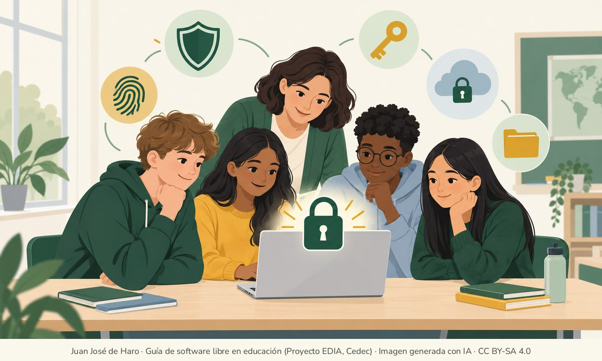

Los riesgos para la privacidad


En un mundo tan conectado a la tecnología, ¿qué riesgos se corren de cara a la privacidad? Esta página se centra en dos de ellos: las puertas traseras, es decir, programas preinstalados que actúan sin que se sepa, y la compraventa de datos personales. Las páginas siguientes explican cómo protegerse: «Cifrado y comunicaciones seguras», «Cifrado de discos y memorias USB», «Contraseñas y copias de seguridad» y «Herramientas para la privacidad y la seguridad». «Actividades de cifrado» propone llevar todo esto al aula.
No todo depende de la tecnología. En España y en la Unión Europea, los datos personales están protegidos por el Reglamento General de Protección de Datos (RGPD) y por la Ley Orgánica de Protección de Datos Personales y garantía de los derechos digitales (LOPDGDD). Gracias a ellos, cualquier persona puede saber qué datos tiene una empresa sobre ella, pedir que se corrijan o se borren y oponerse a determinados usos. La Agencia Española de Protección de Datos explica cómo ejercer estos derechos y atiende las reclamaciones.
Puertas traseras
Cuando se compra un dispositivo nuevo, por ejemplo un móvil o un ordenador, antes de instalar absolutamente nada, este ya se habrá puesto en contacto a través de Internet con empresas totalmente ajenas a lo que se ha comprado. Incluso se podrá enviar la localización o la lista de llamadas, o instalar programas de forma remota, sin intervención ni conocimiento de quien lo usa. Esto ocurre porque los dispositivos vienen con una serie de programas preinstalados para los que no se ha dado ningún permiso y que suelen tener acceso total al móvil o al ordenador. Son las puertas traseras, que permiten realizar acciones que la persona usuaria desconoce, muchas veces con intenciones poco confesables. A estos programas no deseados se les llama crapware o bloatware.
Los procesadores de Intel y AMD incluyen un pequeño sistema independiente (Intel Management Engine y AMD Platform Security Processor) que funciona mientras el equipo tiene corriente, incluso apagado, y cuyo código no es público. Según sus fabricantes, sirve para la gestión y la seguridad del equipo. En ocasiones se les ha acusado de actuar como puertas traseras, y aunque siempre lo han negado, tampoco han permitido comprobarlo, como muestra la negativa de AMD a hacer público su código.
Otros dispositivos traen sus propios programas, cuya función no está clara y que hacen sospechar que se utilizan para fines que no serían muy populares si se hiciesen públicos. No son pocos los casos conocidos de hardware con puertas traseras, desde móviles con una contraseña oculta que daba control total del aparato hasta equipos de red que la NSA interceptaba antes de su entrega para instalarles programas espía (recopilación de casos en Wikipedia, en inglés). El software libre no hace imposible una puerta trasera, pero permite que cualquiera revise el código y la descubra. Así ocurrió en 2024, cuando un desarrollador detectó a tiempo una puerta trasera escondida en xz, una herramienta presente en muchas distribuciones GNU/Linux, antes de que llegara a sus versiones estables. Con el software propietario, en cambio, solo queda confiar en el fabricante.
Si bien los ordenadores son susceptibles a las puertas traseras, donde algunas empresas han visto el campo abonado para el espionaje ha sido en los dispositivos móviles. Un móvil está formado por cientos de componentes, muchos fabricados por empresas distintas, que llevan sus propios controladores para poder funcionar. En 2019, un equipo de la Universidad Carlos III de Madrid y del instituto IMDEA Networks analizó más de 82.000 aplicaciones preinstaladas en más de 1.700 móviles Android de 214 marcas. Muchas se comunicaban con servidores de terceros y tenían permisos a los que la persona propietaria del móvil nunca había dado su consentimiento, algo que sí se pide a las aplicaciones que se instalan directamente. La propia Agencia Española de Protección de Datos publicó una nota técnica sobre el estudio.
Un estudio posterior, de las universidades de Edimburgo y Trinity College Dublin (2021, en inglés), comparó lo que envían seis versiones de Android con el móvil en reposo, sin haber iniciado sesión en ninguna cuenta y rechazando todas las opciones de compartir datos. Cuatro son las que instalan de fábrica Samsung, Xiaomi, Huawei y Realme, y dos son libres: LineageOS y /e/OS. No hay forma de desactivar estos envíos.
| Versión de Android | Envía identificadores permanentes del móvil | Empresas, además del fabricante, que reciben datos |
|---|---|---|
| Samsung | Sí | Google, operadora, Microsoft, LinkedIn, Hiya |
| Xiaomi | Sí | Google, operadora, Facebook |
| Huawei | Sí | Google, Microsoft, Avast, Qihoo 360, Dailymotion |
| Realme | Sí | Google, Heytap |
| LineageOS (libre) | No | |
| /e/OS (libre) | No | Ninguna |
El resultado de LineageOS muestra que ser libre no basta si el móvil lleva las aplicaciones de Google, que son las que envían los datos. /e/OS, que las sustituye por alternativas libres, no envía prácticamente nada. Es decir, la recogida de datos no es imprescindible para que un móvil funcione: es una decisión de quien lo fabrica.
La complejidad de la tecnología hace que un dispositivo sea fruto de empresas de orígenes muy diversos, y nadie es responsable en último término de la información que escapa del móvil. Algo se ha avanzado: desde 2024, la Ley de Mercados Digitales de la Unión Europea obliga a las grandes plataformas, como Google, a permitir desinstalar las aplicaciones que preinstalan. Pero no afecta a las del fabricante del móvil ni a las de otras empresas.
Frente a esto, poco se puede hacer de forma individual, porque es la forma en que la tecnología viene dada, y no por unas cuantas empresas: es la norma general. Pero conocerlo es el primer paso para adaptar la propia conducta a los aparatos que se usan a diario, elegir alternativas libres cuando existen y ejercer los derechos que reconoce la ley.
La compraventa de datos personales
Las empresas que ofrecen sus servicios de forma gratuita, o a un precio muy por debajo de lo que realmente cuesta la tecnología, han despertado sospechas por los numerosos casos de tráfico de datos y de uso para fines no contemplados en sus políticas de privacidad.
A continuación se presenta una pequeña selección de casos, desde el mayor escándalo de espionaje conocido hasta los más recientes. Facebook aparece más de una vez: los escándalos de su empresa matriz, Meta, dueña también de Instagram y WhatsApp, se suceden periódicamente.
Caso Snowden, 2013
En 2013, un antiguo empleado de la Agencia de Seguridad Nacional de Estados Unidos (NSA), Edward Snowden, dio a conocer más de un millón de documentos secretos que revelaban que el gobierno norteamericano, junto a las agencias de espionaje de otros países, había creado una red de espionaje global a través de Internet. Esta red era capaz de espiar conversaciones privadas y mensajes de correo electrónico, e incluso de activar el audio y el vídeo de móviles y ordenadores sin que se notara, introduciendo código malicioso en aplicaciones muy utilizadas como Google Maps o Angry Birds. La NSA también espió los correos de Gmail y Hotmail. Con todo ello podía usar los correos, fotos, contactos y la ubicación para hacer un perfil de cualquier persona que le interesara. Según los documentos, empresas como Google, Apple, Microsoft, Yahoo!, Facebook o Vodafone habrían colaborado en este espionaje.
Snowden huyó de Estados Unidos, que todavía lo reclama, y vive en Rusia, que le concedió la nacionalidad en 2022. Sus revelaciones tuvieron consecuencias en Europa: el activista austriaco Max Schrems denunció a Facebook por permitir que la NSA accediera a los datos de los europeos, y tras años de pleitos, en 2023 Meta recibió la mayor multa impuesta hasta entonces por el RGPD, 1.200 millones de euros, por seguir enviando esos datos a Estados Unidos. Para hacerse una idea más exacta de hasta qué punto es posible este control, conviene leer el artículo de Wikipedia «Revelaciones sobre la red de vigilancia mundial», que figura en Para saber más.
Cambridge Analytica, 2018
Fue tristemente conocido el caso de Cambridge Analytica, una empresa de minería de datos que obtuvo a través de Facebook la información de hasta 87 millones de usuarios para crear anuncios favorables a determinadas opciones políticas, entre otras en las elecciones presidenciales de Estados Unidos de 2016. Facebook lo supo durante años sin hacer nada para proteger a sus usuarios, hasta que el escándalo estalló en 2018. Cambridge Analytica no actuó así solo en esas elecciones: era su modo de trabajo habitual. En palabras de uno de sus empleados: «Explotamos Facebook para acceder a millones de perfiles de usuarios. Y construimos modelos para explotar lo que sabíamos de ellos y apuntar a sus demonios internos. Esa era la base sobre la cual la compañía se fundó» (Cambridge Analytica). En 2022, Meta aceptó pagar 725 millones de dólares para cerrar la demanda colectiva por este caso.
Gravy Analytics, 2025
Muchas aplicaciones gratuitas de uso diario, como juegos o aplicaciones de deporte, muestran anuncios. A través de esos anuncios, empresas como Gravy Analytics recogen la ubicación de los móviles para después venderla. En enero de 2025, un ataque a esta empresa sacó a la luz sus datos: millones de ubicaciones de móviles de todo el mundo, procedentes de miles de aplicaciones como Candy Crush, Tinder o MyFitnessPal. Muchos desarrolladores ni siquiera sabían que sus aplicaciones formaban parte de este negocio, y mucho menos quienes las usaban.
Meta e inteligencia artificial, 2025
Este caso afecta a cualquiera que tenga una cuenta en Facebook o Instagram. Desde el 27 de mayo de 2025, Meta usa las publicaciones y comentarios públicos de sus usuarios adultos de la Unión Europea para entrenar su inteligencia artificial. No pide permiso: quien no quiera que se usen sus datos tiene que oponerse expresamente mediante un formulario, y la oposición no afecta a lo que ya se haya utilizado. Es un buen ejemplo de por qué conviene conocer los propios derechos.
La escuela no queda al margen: en «Datos y servicios digitales del centro» se recoge el caso de un colegio sancionado en 2026 por la forma en que usaba Google Workspace for Education.
Tras estos sucesos, que muestran hasta qué punto es posible la intromisión en la privacidad, surgieron proyectos como Proton Mail, un correo creado en Suiza por investigadores del CERN, con aplicaciones de código abierto y pensado para proteger la privacidad. También se extendió el uso de las comunicaciones cifradas, que aunque se intercepten solo pueden leer las personas que las envían y las reciben. Y se han fortalecido proyectos de software libre que permiten una privacidad real, como Tor, una red para navegar sin dejar rastro, o Nextcloud, un programa para crear nubes de datos al estilo de Dropbox, entre muchos otros.
¿Qué se puede hacer?
Es posible que algunas personas, al conocer estos casos, piensen que lo que se pueda saber de ellas no tiene demasiada importancia o que no se puede hacer nada por evitarlo, y prefieran pagar con su privacidad para seguir usando los servicios de cada día.
Pero los datos personales sirven para algo más que mostrar anuncios. El caso de Cambridge Analytica muestra que permiten dirigir a cada persona mensajes pensados para influir en sus decisiones, también en las políticas, a partir de lo que se sabe de ella: noticias exageradas o falsas que tocan sus preocupaciones y, después, el mensaje de quien dice compartirlas. Saber cómo funciona es la mejor forma de no dejarse llevar.
Algunas preguntas ayudan a revisar los propios hábitos:
- ¿Qué redes sociales uso y qué publico en ellas? Conviene recordar los escándalos de Facebook y que Instagram también pertenece a Meta. Lo mejor es limitar al mínimo la publicación de la vida privada, en estas o en otras redes sociales.
- ¿Qué programas de mensajería utilizo? Aunque las comunicaciones estén cifradas, las personas con las que se habla definen la red de relaciones real, y programas como WhatsApp pueden explotar esa información.
- ¿Qué sistema operativo usan mi ordenador y mi móvil? ¿Existen opciones libres que ofrezcan mayor libertad?
- Las aplicaciones que utilizo, ¿son propietarias o libres? La pregunta vale tanto para las de trabajo como para todas las demás.
- ¿Sé cómo ejercer mis derechos? Por ejemplo, cómo pedir a una empresa los datos que tiene sobre mí o cómo oponerme a que una red social use mis publicaciones para entrenar su inteligencia artificial.
Estrategias en la escuela
- Proyectar una película o un documental sobre el tema para hacer un cinefórum. Probablemente la más apropiada sea Snowden (2016), sobre la filtración de los documentos de la NSA. También dan pie a tratar el tema el documental Citizenfour (2014), rodado mientras Snowden entregaba los documentos a los periodistas, y El dilema de las redes sociales (2020), sobre cómo las redes sociales explotan los datos y la atención de sus usuarios.
Para trasladar a las familias
- En familia, el ejemplo es la mejor escuela. Por eso conviene moderar lo que se publica en Internet, empezando por las propias actividades familiares en Instagram o Facebook. Para el clásico chat familiar son preferibles programas libres que protejan la privacidad, como Signal, que cifra todas las conversaciones de extremo a extremo, o Element. En «Cifrado y comunicaciones seguras» se explica cómo elegirlos.
- Cambridge Analytica en Wikipedia
- Revelaciones sobre la red de vigilancia mundial
- Ejerce tus derechos, Agencia Española de Protección de Datos
- Nota técnica sobre el estudio de IMDEA Networks y la UC3M, Agencia Española de Protección de Datos
- Cómo oponerse a que Meta use los datos personales para entrenar su IA, Xataka Móvil